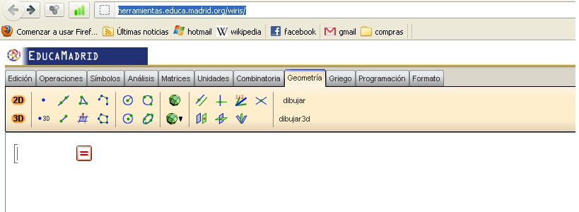
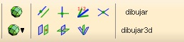
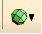
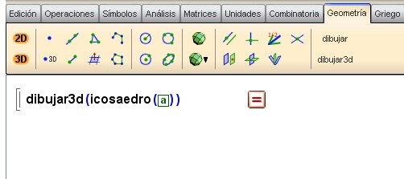
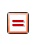
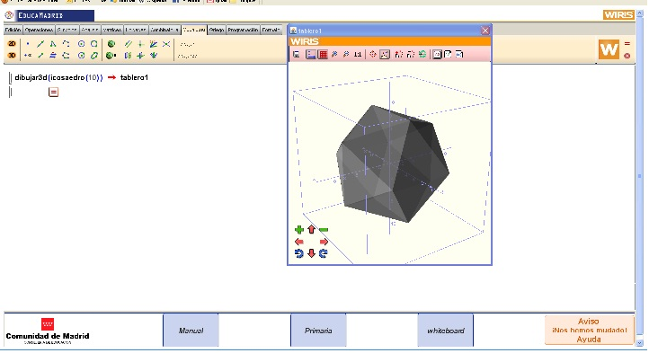
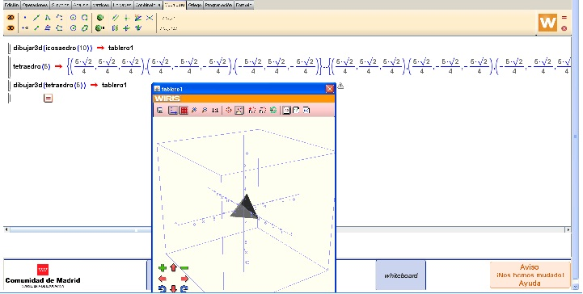

|
Vés al lloc: http://herramientas.educa.madrid.org/wiris/
1. Selecciona l’opció: Geometria

2. Clica sobre: dibujar 3d
|

|
A la pantalla sortirà:
dibujar 3d( )
A l’interior del parèntesi has de posar què és el que
vols dibuixar.
|
Posa’t amb el cursor a l’interior del quadradet del
parèntesi i selecciona:
|

|
Aquí es desplega
tot un menú de diferents poliedres que podem dibuixar. Seleccionem: icosaedre
|
|

|
A l’interior del parentesi hem de posar el valor de
l’aresta.
Posem: a=10, i apretem el signe :

|
3. Ens apareixerà una finestra amb la figura triada, en
el nostre cas un icosaedre d’aresta 10. Aquí pots rotar les vistes,
canviar l’escala, fer zoom...

Activitat:
- Pensa en un tetraedre. Vés al menú desplegable dels
poliedres, i selecciona: tetraedre. Et demanarà el valor de l’aresta, fés
que valgui 5 unitats. Et sortiran uns valors entre perèntesis. Què són
aquests valors?
- Ara selecciona l’opció de dibuixar 3d, i dibuixa’l. Aquí
podràs veure els valors que et sortien en l’anterior apartat.
- Dibuixa un octaedre d’aresta 8. Quin és el valor
dels seus vèrtex?

|